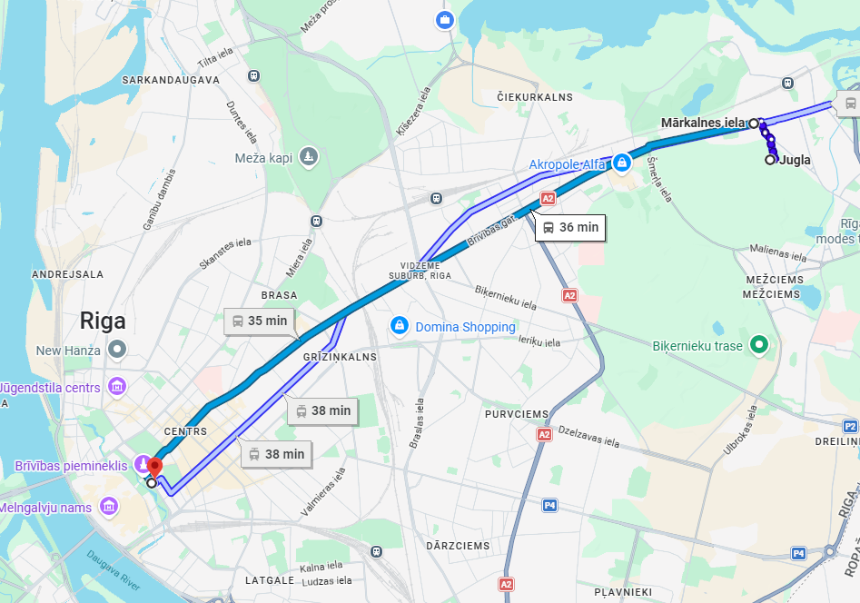
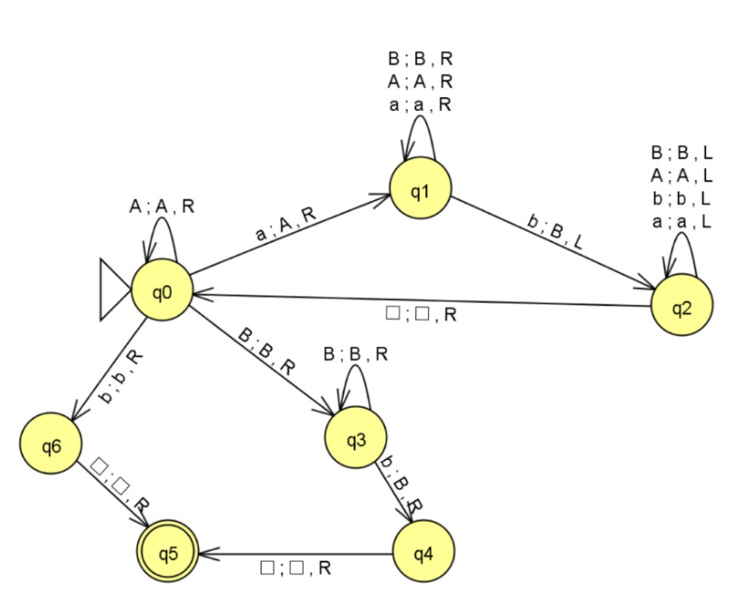
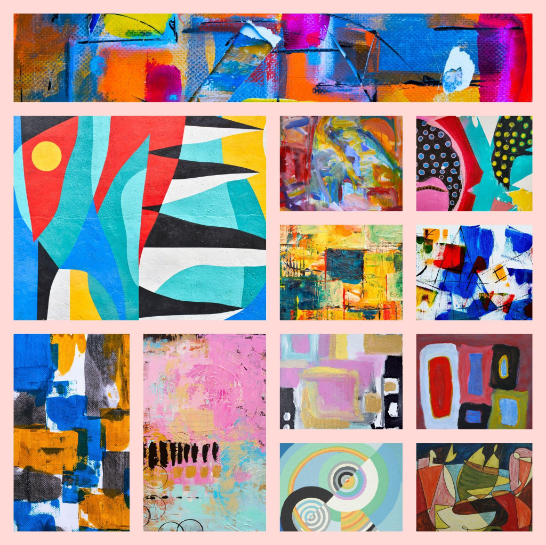

Ceļš uz universitāti
Nedēļa sākas agri. Modinātājs noskan septiņos, un, kamēr pārējā pilsēta vēl tikai mostas, es jau dodos uz pieturu. Es dzīvoju Juglā, tālāk no centra, tāpēc katru rītu braucu uz Latvijas Universitāti ar 1. tramvaju. Maršruts no Juglas ved cauri rīta Rīgai gandrīz visai pilsētai pāri — tas ir garākais tramvaja maršruts, bet tieši tāpēc tas ir ērts: iekāpju vienā galā un izkāpju jau netālu no fakultātes.
Tramvajs rīta stundā ir pārpildīts, logi aizsvīduši, taču šajās aptuveni četrdesmit minūtēs paspēju pārskatīt dienas plānu telefonā, atvērt e-studiju lietotni un pārliecināties, vai nav mainījušās auditorijas. Reizēm izlasu rakstu par programmēšanu, citreiz vienkārši klausos mūziku un vēroju, kā aiz loga slīd garām pieturas. Kad beidzot izkāpju un ieeju fakultātes ēkā, nedēļa var sākties pa īstam.

Algoritmu teorija
Otrdienas ir veltītas Algoritmu teorijai — un tas, bez šaubām, ir viens no sarežģītākajiem priekšmetiem visā studiju programmā. Šeit nepietiek vienkārši uzrakstīt kodu, kas strādā: ir jāsaprot, kāpēc tas strādā, cik ātri tas darbojas un vai to vispār ir iespējams atrisināt efektīvāk.
Lekcijās analizējam algoritmu sarežģītību, pierādām to korektību un mācāmies novērtēt laika un atmiņas patēriņu. Tēmas mēdz būt abstraktas — rekursija, dinamiskā programmēšana, grafu algoritmi, sarežģītības klases — un dažkārt vienu uzdevumu nākas pārdomāt vairākas reizes, līdz beidzot noklikšķ. Tieši šī izaicinājuma dēļ Algoritmu teorija prasa visvairāk koncentrēšanās, bet arī dod vislielāko gandarījumu, kad grūts pierādījums beidzot izdodas.

Tīmekļa dizaina pamati
Trešdiena ir radošākā nedēļas diena, jo tad mācāmies Tīmekļa dizaina pamatus. Šeit no koda pasaules uz brīdi pārceļos uz dizaina pasauli: domāju par krāsām, tipogrāfiju, atstarpēm un to, kā cilvēks patiesībā lieto vietni. Tieši šis priekšmets iedvesmoja arī šo mājaslapu.
Lielāko daļu laika pavadām, praktiski dizainējot un veidojot dažādus dizainus — no pirmajām skicēm un maketiem līdz gatavām lapām. Mācāmies izkārtot saturu tā, lai tas būtu pārskatāms, eksperimentējam ar gaišo un tumšo režīmu, pielāgojam dizainu dažādiem ekrāniem un saņemam atgriezenisko saiti par saviem darbiem. Katra nodarbība beidzas ar jaunu maketu vai uzlabotu projektu, un ir patīkami redzēt, kā idejas pārtop par reālu, lietojamu dizainu.
Patstāvīgais darbs un programmēšana
Ceturtdiena ir veltīta dziļam darbam. No rīta ieņemu vietu bibliotēkā, atveru klēpjdatoru un ķeros pie semestra projekta. Programmēšana prasa koncentrēšanos — reizēm stundām meklēju kļūdu kodā, līdz beidzot saprotu, ka aizmirsts viens vienīgs simbols. Tieši šie mazie uzvaras mirkļi, kad programma beidzot strādā, padara studijas tik aizraujošas.
Pa dienu izmantoju dokumentāciju, izstrādātāju forumus un versiju kontroles rīkus, lai sekotu līdzi izmaiņām. Kad iestrēgstu, uzrakstu kursabiedram, un kopā ātri atrodam risinājumu. Pēcpusdienā nedaudz atelpoju — izeju pastaigā ap universitātes ēku, lai izvēdinātu galvu. Atgriežoties pie darba, domas ir skaidrākas. Vakarā saglabāju paveikto un atzīmēju izpildītos uzdevumus sarakstā. Šī ir klusākā, bet, iespējams, produktīvākā nedēļas diena.
Ārpusstudiju aktivitātes
Piektdiena nozīmē, ka nopietnais darbs ir paveikts un var nedaudz atslābt. Pēc rīta lekcijas dodos uz studentu pašpārvaldes telpām, kur plānojam tuvojošos pasākumu. Datorikas fakultātē netrūkst ārpusstudiju aktivitāšu — hakatoni, programmēšanas sacensības, nozares vakari un neformālas tikšanās ar uzņēmumiem.
Šovakar fakultātē notiek neliela spēļu izstrādes pēcpusdiena, un mēs ar komandu prezentējam savu mazo projektu. Šādi pasākumi palīdz iepazīt cilvēkus ārpus savas grupas un parāda, ka studijas ir kas vairāk par lekcijām. Vēlāk kopā ar draugiem aizejam uz pilsētu — pārrunājam nedēļā piedzīvoto un jau sapņojam par nākamajiem projektiem. Nedēļa noslēdzas ar gandarījumu: piecas dienas, daudz jaunu zināšanu un sajūta, ka esmu daļa no draudzīgas studentu kopienas.